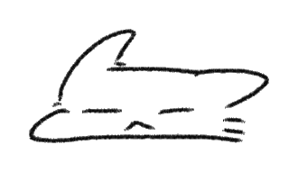
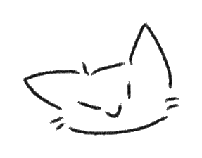
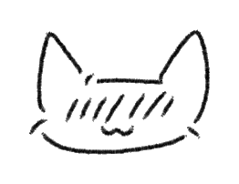
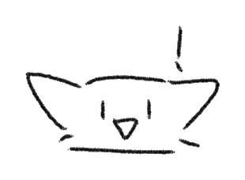
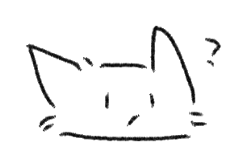

stillhere
a space for presence,
not solutions.
when everything feels heavy — slow down,
breathe, and find a quiet place that feels like yours.
a space for presence,
not solutions.
when everything feels heavy — slow down,
breathe, and find a quiet place that feels like yours.

share without showing your face or your name. your presence is enough.

a toggle that protects your story from unsolicited advice — only listening, only company.

1,000+ people already showed up here, in their own languages, at their own pace.

sensitive content can be flagged. humans review every report — slowly, gently.

no bots, no performance — mindful, honest conversation, in any language.
"you don't always need to be fixed.
sometimes you just need to be witnessed."
your story matters.
your feelings are valid.